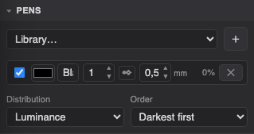
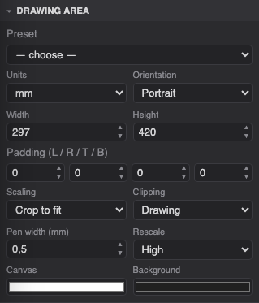
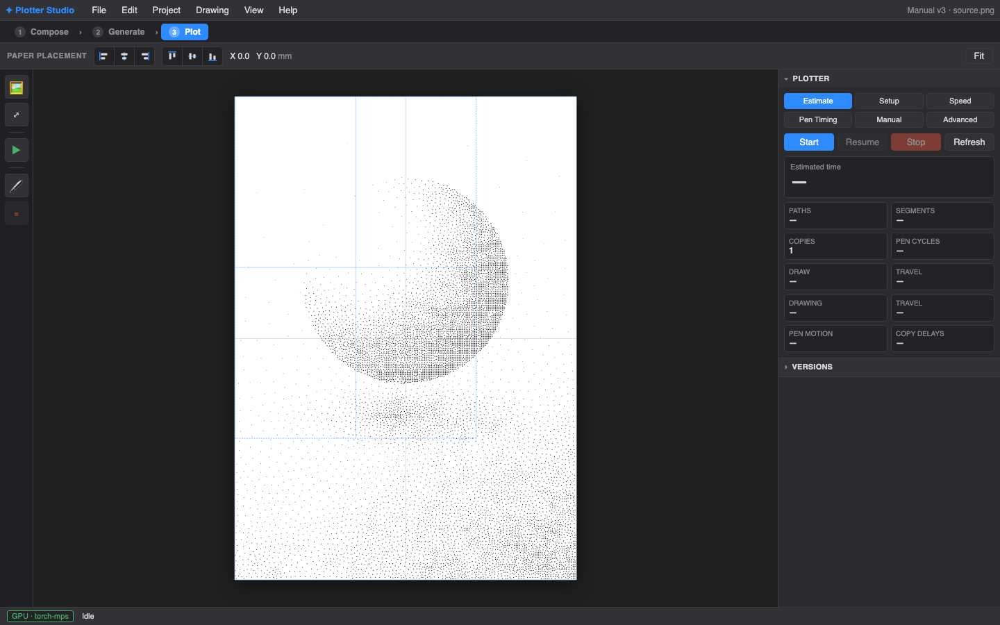

The last mile: real pens, real paper, a real machine. The studio drives Grbl pen plotters (built for the iDraw H A3) with time estimates, multi-pen choreography and resumable jobs.

The Pens panel defines your physical pens: colour, stroke width in mm, an enable toggle, and a weight — the pen's share of the drawing. Load a ready-made Library… (e.g. a marker set) or build your own with ＋.
Layers generated earlier remember their drawing set, and export writes one Inkscape layer per pen, in plotting order.

Paper and framing for generation: presets (A-series and more) or custom width × height in mm/cm/in, orientation, and per-side padding (margins). Scaling decides how the source image fills the inner area (crop to fill / fit inside / stretch); Clipping trims strokes at the drawing bounds. Pen width (mm) is quietly the most important number in the app: the generation raster is sized so one pixel ≈ one pen stroke, which is what keeps "density 100%" plottable instead of a puddle. Rescale caps that resolution for speed while drafting.

Paths, segments, pen cycles, drawn distance vs. pen-up travel, and a time estimate broken down into drawing / travel / pen motion / copy delays — computed from your actual speeds. Check it before committing a 4-hour piece.
Port selects the serial connection. A plotter on another
machine works too: run the bundled bridge (bridge/ folder —
launchd/systemd service that forwards the serial port over the network) and
choose the socket://host:port entry.
Paper preset / size and Pen up / down
heights complete the physical setup.
Drawing speed and Travel speed (mm/min), Copies with a copy delay for swapping paper, and fine pen timing: raise/lower rates and settle delays after up/down — the difference between crisp dots and blobs.
Jog the head (configurable step), home the machine, raise/lower the pen, and send one-off commands — for aligning paper and testing pens.
In the Plot step, drag the drawing outline on the canvas to position it on the physical sheet — the toolbar (labelled Paper Placement here) shows the offset in mm, and the align buttons snap it to paper edges/centres. Placement is part of the job, so a resumed plot lands in exactly the same spot.